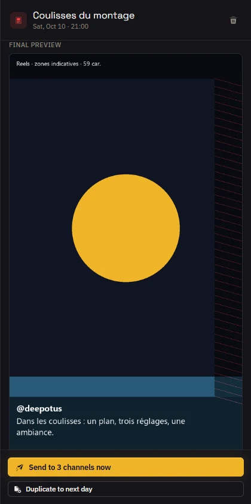
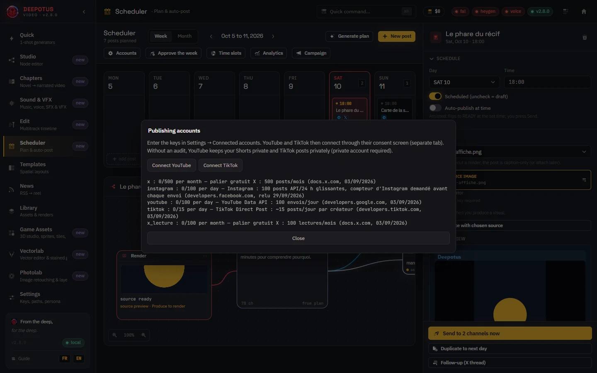
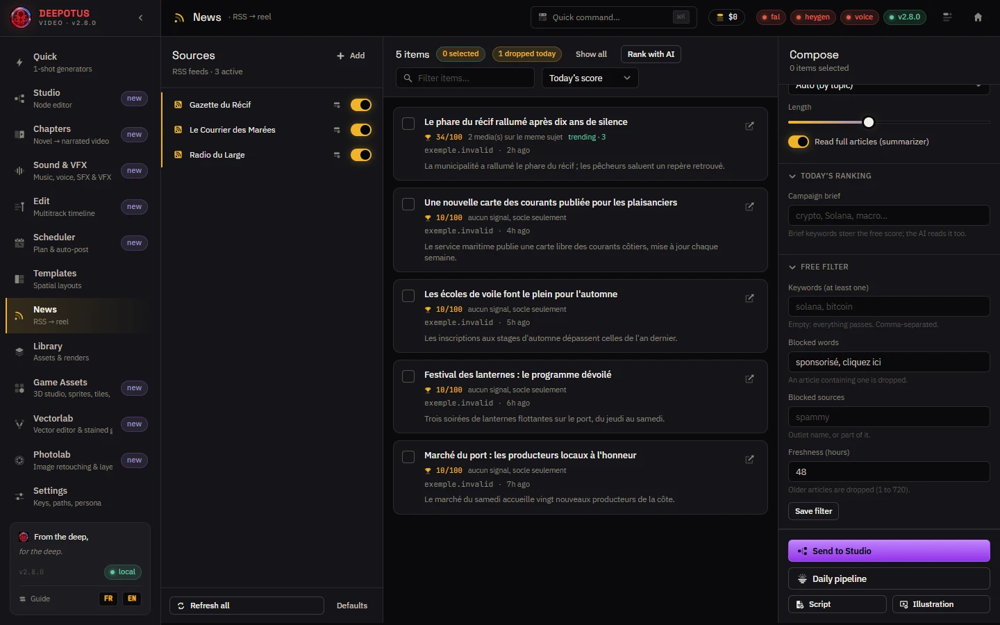

You will find your way around the app, move from one screen to another without searching, and read what the top bar tells you. Five minutes, free.
Deepotus Video Gen is a studio that runs on your own computer. It turns an idea into a video, a picture, a 3D object or a published post. You plug in your own AI provider keys: you pay those providers, not the app. Everything you create stays with you.
1. The rail: one screen per task 2. Ctrl+K: go anywhere from the keyboard 3. This month's spending and key status, always in sight
The screen rail on the left, the top bar with the quick command, the spending counter and the key status.
The rail, on the left: one screen per task. Quick for a one-click video, Studio to compose, Edit to cut a video, Library to find your media, Settings for the keys. The arrow at the top of the rail folds it into icons only.
The quick command: click Quick command… or press Ctrl+K, type a few letters, Enter.
The spending counter shows what you spent this month with your providers. One click opens Settings.
The badgesfal, heygen and voice turn green when the matching key is set. One click takes you to that key.
The render queue, top right, lists what is being computed and what just finished, in the Running and Recent tabs.
Ctrl+K opens the quick command: type a few letters to go to a screen or start an action.
The quick command goes to any screen (Go to Studio, Go to News…), opens the last render, creates a starter graph or opens a Settings section. Replay onboarding restarts the first-launch tour.
During installation, pick the language: French or English. It becomes the language of the whole app.
Double-click the Deepotus Video Gen desktop icon. The app starts without a black window, then your browser opens on the studio.
On the very first launch, a five-step welcome introduces the studio and lets you pick a persona, your generation providers and the networks you publish to.
Set at least one key, the fal.ai one: it makes pictures and video clips. The chapter Connect your keys shows how.
Settings › Provider defaults › Interface language: the page reloads in the chosen language.
Open Settings › Provider defaults.
In Interface language, pick Français or English. The page reloads in the chosen language.
Translated: the sidebar, Settings, the Library, Quick, News, the Scheduler, the Studio, Templates, Episodes, the editor, Sound & VFX, subtitles, machine transfer and every confirmation dialog. Lists sent by the server (effects, transitions, presets) also arrive in the chosen language. The labs (Vectorlab, Photolab, Card Forge…) are being translated one by one; meanwhile their known texts are translated on display. What you type yourself is never translated.
1. Your version is up to date 2. Check asks for the latest published version
The version block in Diagnostics: the installed version, its status, and a button to check right now.
Once a day, the app checks whether a new version is published. It never blocks anything.
When there is one, a card announces it: Download fetches the installer and shows where it is saved, Later hides the card for that version, Notes tells what changes.
To check right now: Settings › Diagnostics, Check button.
Close the app, run the downloaded installer: nothing is installed on its own.
You will set an AI provider's key, choose which engine does what, and protect your keys with a password. Ten minutes, free; keys are created with each provider.
An API key is a code the provider gives you on its website, in your account. It lets the app work on your behalf; the provider bills you. Only one is required to start: fal.ai.
In Settings › Provider defaults, each role has its engine: picture generation, voice, picture to video, avatar, voiceover, news summary, post planning. Only keys actually set are offered.
Default video model
The model new Seedance nodes start with in the Studio. Each node can change it.
Default voice model
The ElevenLabs model of new voiceover nodes.
Local AI with Ollama
Install Ollama, download a model, then enter its name in the Local LLM (Ollama) card of API keys.
Gemini: pick the version
Left empty, the “Gemini — model” field always follows the latest Flash version; fill it in to pin one.
1. A cap for each video generation2. Above a cap, the app asks you before spending
Settings › Pricing & budget: your rates, then one cap per engine and the bar of what you spent this month.
At the top of Pricing & budget, enter your providers' rates (price of a picture, of a second of video, of a voice character…). The costs shown in Quick, the Studio and the Scheduler become accurate. Save pricing.
Video cap per request limits the cost of a single video generation; Max generated seconds per clip limits its length.
Further down, Monthly caps: one overall cap and one per engine (fal, OpenAI, Anthropic, ElevenLabs, HeyGen, Meshy), in dollars. A bar shows what was spent.
Set Alert at (% of a cap): a banner warns you once a month when a cap reaches that level. Save caps.
Before leaving, every paid generation is checked against your caps. If it goes over, a “Monthly spending cap” dialog opens, wherever you are in the app:
“Tirer quand même” (run anyway) sends exactly the same request, once.
“Annuler” (cancel) sends nothing and tells you why.
Below the caps, the Monthly spend — actual vs estimated table gives one row per engine and per screen: the number of runs, what was estimated, what was actually billed, and the difference.
Actual
The provider gave the exact price (Meshy, HeyGen): that is what counts.
Partly actual
Some runs have their exact price, the rest is still estimated.
Estimated
The provider gives no price: the app counts the quote made at launch.
A persona is a personality: its tone, its audience, its way of speaking. The active persona sets the News scriptwriter, the tone of the prompt generator and the default voiceover.
Open Settings › Personas.
Built-in personas can be read but not edited: duplicate one, or click New persona.
1. Create a kit 2. The active kit dresses the whole app
Settings › Branding: several brand kits, a single active one, and its fields right below.
Open Settings › Branding. The kit list shows which one is active.
New kit creates one; Activate makes it the active kit and refreshes the app.
The fields below edit the active kit: Logo…, app name, sub-label, two tagline lines, primary and accent colour. Save brand.
Rename, Duplicate and Delete manage each kit. The active kit and the last kit cannot be deleted: the greyed-out button says why.
The active kit dresses the splash screen, the sidebar, the app's accents and Template renders that use the brand. Reset to deepotus restores the original look.
You will take all your work to another computer, check that nothing got damaged on the way, and get your keys back there. Fifteen minutes, free; the app must be installed on both machines.
The transfer takes everything the app created: the Library and the origin of every file, renders, the bible, communication plans, vector documents, card series and 3D models. Your API keys never go into the package.
You will link your phone to the PC, carry your posts and chapters in your pocket, and cut off a lost phone. Fifteen minutes; you need the Deepotus companion app on the phone and the same Wi-Fi.
By default, the app only listens on this PC: no other device can reach it. To open it to your home Wi-Fi, replace HOST=127.0.0.1 with HOST=0.0.0.0 in the .env file of the data folder, then restart the app. Windows will ask to allow Python through the firewall.
1. By default, only this PC can reach the app 2. Shows a QR code valid for 5 minutes
Settings › Devices: the network status, the list of devices, and pairing by QR code.
Open Settings › Devices. The words this PC only or local network open tell whether the phone will be able to reach you.
Click Pair a device: a QR code appears, valid for five minutes, for a single device.
In the phone app, open Pair and scan the QR code. It closes on its own once read.
To give your keys to the phone, export the encrypted archive from the Vault and open it in the phone app, with its password.
Five devices at most. A paired phone reads what the PC produces; it never sees your keys. It only writes to the PC to drop images and for Avatar live, whose spending goes through your caps.
While a chapter is on the phone, it is read-only on the PC, with a banner. You can force it back to the PC. If the two versions disagree, the phone's text stays in the log, to copy or take back: nothing is lost.
You will make a vertical video in minutes: an animated clip from a picture, an avatar saying your text, both together, or a voiceover. Paid depending on the provider; the cost is shown before you click.
Quick has four tabs: Seedance (animated clip), HeyGen (talking avatar), Composition (avatar and clip together) and Voiceover. A tab stays greyed out while its provider's key is missing: fal.ai for Seedance, HeyGen for the avatar (chapter Connect your keys). The voiceover can also run for free on your PC with Voicebox.
1. Drop the picture to animate2. Model, duration and format 3. The cost is shown before you click
Quick, Seedance tab: the start image, the parameters, the estimated cost, then Generate.
Open Quick, Seedance tab.
Pick the start image: drop it on the area or click Browse thumbnails… to take it from the Library. An end image is optional; if the chosen model does not accept one, the field says so and names the models that do.
Write what should move, or start from a prompt template, or click Open prompt generator.
In Parameters, set the model, the duration and the format (9:16 by default).
Read the estimated cost, then click the Generate button. The render goes through the render queue, top right, and lands in the Library.
1. Six sliders, one camera sentence2. The Gallery shows each camera move
Camera sliders become a sentence added to the prompt; the Gallery shows the moves.
Unfold Camera (sliders): six sliders (push in, turn, rise…) become a sentence suited to the model, added to the prompt. It is shown before the render.
To choose by eye, click Gallery: eleven camera moves in three styles, as small animations computed on your PC. It is a reminder, not a promise of what the model will do.
HeyGen tab: pick an avatar and its voice. The lists show up right away, from a copy kept on your PC and refreshed in the background.
For an avatar that looks like you, import a photo: it becomes a talking avatar, selected automatically.
Write the script, then generate. The pauses in your text are kept.
Videos go through HeyGen and its Avatar III engine, picked according to the avatar. The HeyGen balance is shown in dollars. Count about $0.24 a minute at default rates.
You will compose a video piece by piece by linking nodes, see it before paying, never pay twice for what is done, and reuse a graph like a recipe. Paid depending on the nodes; the graph's cost is shown before running.
1. Start from a ready-made graph 2. Preview: see before paying 3. Run: the cost shown becomes the cap
The nodes palette, the graph, the inspector; at the top, the free preview, the cost and Run.
On the left, the nodes palette (/ key) and the starter graphs. In the centre, the graph. On the right, the inspector of the selected node, which can be folded. At the top, the graph bar: New, Save, Recipe, Import, the format, Preview, the estimated cost and Run.
The paid render of a Seedance or HeyGen node is pinned automatically: as long as its request does not change, it is reused for free, and the estimated cost says which nodes are.
The last eight renders
The inspector lists the node's last renders; Use picks the one that feeds the rest.
Regenerate
For a new paid take despite the pin, explicitly ask for the node to be regenerated.
You will start from a ready-made layout, touch it up (slots, masks, texts, animations), adapt it to another format and dress it in your brand. Free; only renders of AI-generated slots cost money.
1. Add text, ticker, brand, component 2. Click a slot: drag it, resize it 3. Save, then open in the Studio
The slots on the canvas, and on the right the settings of the selected slot: mask, sample, animation.
Click a slot on the canvas: drag its body to move it, its handles to resize it. The inspector, on the right, shows its settings.
Mask gives a picture or video slot a shape: rounded, ellipse, polygon (triangle, diamond, hexagon, star, or your own points), cut-out windows, soft edge, coloured rim.
Animation brings the slot in and out with a fade, slide or pop, with duration, delay and curve. Replay on canvas shows it.
Add places a text, a ticker, a separator, the brand, a badge or a component.
Save layout, then Open in Studio to fill it in and render it.
Templates use your brand kit: name, colours, logo. Kits are managed in Settings › Branding (chapter Settings, personas and branding). A render keeps the kit active when it was sent, even if you switch while it computes.
You will turn a text, a chapter or a novel into a narrated, illustrated video, scene by scene, and prepare its storyboard before paying for any render. Free up to narration and pictures; their cost is shown beforehand.
1. The original flow: from text to narrated episode 2. The Workshop: manuscript, bible, storyboard
Chapters offers the original flow (Episodes) or the full Chapter Workshop.
Open Chapters in the rail. The original flow (Episodes) goes straight from text to narrated video in four steps. The Chapter Workshop is the full space: manuscript, bible of characters and places, screenplay, storyboard, animatic.
1. Four steps, left to right 2. Paste the text or upload a file 3. The voice reads the whole chapter
Episodes: script and voice, scenes, illustrations, assembly.
Script and voice: give a title, paste the text or upload a .txt, .docx or .pdf. Pick the voice and language, then Generate narration: the whole chapter is read and stored in the audio Library.
Scenes: split the text by paragraph (word for word) or by AI (into visual beats, with an illustration prompt). Edit, reorder, add or remove scenes.
Illustrations: one picture per scene, with the model of your choice. For each scene, pick the animation: slow camera move (Ken Burns), real Seedance clip or still picture.
Assembly and export: a quote gives the price of the Seedance scenes, then the episode is cut on its narration. If a Seedance scene fails, it falls back to a camera move and you are told.
At the top, New, Open and Save manage your episodes; a dot marks what is not saved. Narrate scenes never pays again for a scene already narrated with the same text, voice and language.
1. Three modes: script, screenplay, storyboard 2. The bible: characters, places, objects…3. The storyboard, then the free animatic
The chapter text in the centre, the bible on the right; Script, Screenplay and Storyboard at the top.
The Workshop is not translated yet: its buttons below are quoted as they appear, in French.
Script: write or import the chapter text; Manuscrit imports a whole novel, split into chapters, and fills the bible. Recognised names are highlighted.
Bible, on the right: characters, places, objects, dates, moods, sets. Each entry has its description, its picture sheet and, for a character, its voice and temperament.
Screenplay: Adapter (IA) (adapt with AI) rewrites the chapter as a screenplay without touching the manuscript; Voice-over has each scene read by its character's voice.
Storyboard: Découper (IA) (split with AI) or Paragraphes (paragraphs) creates the shots, with their framing, camera, duration and the entities in them.
Animatique (animatic) cuts the shots into a rehearsal video, silent and free, to watch before paying for a render. It then goes into a new Edit project, as a full film or a 30 s reel.
You will generate music, sound effects and a voiceover you direct, store and find your sounds, and add free visual effects. Each generator's price is shown; visual effects and post-processing are free.
1. Music, effects, voice, particles, post: the price is shown 2. Direct the voice's acting
The generators at the top; directed voiceover, sound effects and post-processing below.
Open Sound & VFX in the rail. At the top, the generators and their price: music, sound effects (606 bundled sounds, plus generation from a description), voiceover, particles and post-processing. Below, three tabs: Audio, Particle VFX and Post-processing.
Click emotion or acting tags (four at most): they go at the start and the Eleven v3 model performs them. The screen shows exactly what is sent to the model.
Generate voice. Trim, add a fade, dip the music under the voice or normalise, then Send to Montage.
Outside the v3 model, or with Voicebox, the tags are removed and you are told.
Instrumental or sung: describe the style, write the lyrics section by section (a skeleton is suggested from the persona). Billed per second, under your caps.
Sound effects
Describe the sound and its length: two variations to listen to, which join the Library and the editor's Sounds drawer.
Voice and music mix
Mixes a voice and a piece of music, dipping the music under the voice; the mix lands in the Library.
A character's voice
In the Workshop, a character gets a cloned voice (paid) and a temperament, performed on each of its lines.
1. All sounds, then by kind: SFX, voice, music 2. Each sound: listen, tag, enhance, split
Library, Audio chip: the Sounds drawer, with its search, filters and actions.
All your sounds live in the Sounds drawer: in the Library (Audio tab) and in the editor (B key). Filter by kind (effects, voices, music, imported), between your sounds and the bundled catalog, search by name or tag.
Enhance
Equaliser, noise reduction, compressor and normalised loudness in one click, on your PC, no provider.
Split into stems
Splits music into vocals, drums, bass… (paid, quote on first click); each stem stays linked to its parent.
Isolate the voice
Removes the background from a voice take (paid, quote on first click).
Search by description
Describe what you want to hear; sounds similar to a sound can be listed too. Needs the local search service, otherwise the button says why it is greyed out.
Preview
Hover a sound to hear it (option to turn on); Space plays the selected row.
Particle VFX: explosions, smoke, sparks, magic… simulated on your PC, to place on a shot.
Post-processing: 16 mm grain, glow, glitch, aberration; applied at render time by the Studio's Render node.
In the editor's effects rack, an effect can go behind the shot's cut-out subject, or in front of it. Cutting out the subject is paid; a first click gives the quote.
You will learn to create a Character from a few photos, have that Character replay a video in another setting, and film yourself on your webcam transformed live, with their voice. Twenty minutes. Everything is billed per second: the price shows before each launch and counts against your caps.
The Avatar live screen opens from the rail. It needs keys depending on what you do: fal for Recast and the setting, Decart for Live, ElevenLabs for the Character's voice. The free local voice needs an NVIDIA graphics card and Voixbox (see Install and train a local RVC voice).
Only clone your own face and voice, or those of someone who has agreed to it. The app makes you confirm this for every Character and keeps the date.
1. Each model shows its price per second 2. A ready-made setting, or your own instruction 3. The quote first, then the launch
Recast: a source video, a model and its price, the Character, the setting; the quote shows before you start.
A 3 to 30 s video keeps its acting; the Character, the setting or an element changes. The render takes a few minutes and joins your renders.
Recast tab: drop the source video, or pick a render from the app.
Choose the Model: its price per second is shown next to it.
Choose the Character, then a setting from the Presets or a free instruction (preferably in English).
Tick the Character's voice if you want the take's voice converted into theirs, at the same pace.
Read the quote under the button, then Start the Recast.
To try at half price, click 480p draft: if you like it, “Finalize in 720p” on its card reruns the same Recast with the same seed. The final render is very close to the draft, without being identical. The motion transfer models have no draft.
Only one person is replaced per take. For the setting, Suggest an instruction from the take has the vision AI connected in your keys describe the place (never the people); read the instruction before you start.
1. The setting, switchable mid-session 2. Your voice, the Character's, or a local RVC voice 3. The reserved price is shown before you start
Live: Character, setting, format, reserved duration and voice sent; the reserved price shows before you start.
Live tab: the first time, paste your Decart key and click Save the key. It goes to the vault; the page never sees it.
Choose the Character (or keep your face), a Setting, the Format and the Reserved duration.
Choose the Voice sent: your own as it is, the Character's through ElevenLabs (about 2 s delay), or a local RVC voice (under a second).
Start the live session. The transformed picture appears next to your webcam; switch settings on the fly with Apply the setting.
Record the live session keeps the footage in your renders, ready for the Editor or a Recast.
When a voice is converted, the picture is delayed by as much as the voice: lips and sound arrive together. The live bar shows the converted segments, the latency and any losses.
The subject of the video is cut out, then placed on a color, a Library image or a video. Check the cut-out first shows one picture on the new background; the video only goes after that.
Change only the voice
Keeps a video's picture and replaces its voice with the Character's. Billed at the ElevenLabs character equivalent.
In the Studio
The Recast and voice conversion nodes plug into an existing render or a UGC video. The graph quote counts their price before Run; the Recast node also has its 480p draft.
On the phone
The companion app starts a Recast (480p draft included, then its final version), films a take or opens a Live session, at your PC's prices and under the same caps.
You will learn to install Voixbox, record your voice, train it with RVC and have it speak during a Live session, on your own graphics card. Free: nothing goes to the Internet. Allow thirty minutes to install, a quarter of an hour to record and about an hour of computing per voice.
You need an NVIDIA graphics card with 6 GB of memory or more, and about 6 GB of disk. Without one, Live offers your voice as it is or the Character's voice through ElevenLabs (paid, nothing to install).
The engine is RVC (MIT license), through its official WebUI: the same install trains a voice and makes it speak. Only clone your own voice, or that of someone who has agreed to it.
Run powershell -ExecutionPolicy Bypass -File tools\voixbox\webui.ps1. The WebUI opens in French at http://127.0.0.1:7865; keep the PowerShell window open.
« Entraîner » (Train) tab, step 1: a short experiment name with no spaces or accents (oli), rate 40k, pitch guidance Oui (yes), version v2.
Step 2: your recordings folder, and the rmvpe pitch algorithm.
Step 3: save every 25 epochs, 200 epochs in total (100 for a first try), batch 8 (or 4 with 6 GB), small final model at each save: Oui (yes).
Click « Entraînement en un clic » (one-click training). Allow about 1 h 15 for 200 epochs on an RTX 2080 Ti.
Put the voice where Voixbox looks for it: powershell -ExecutionPolicy Bypass -File tools\voixbox\ranger-voix.ps1 -Nom oli.
Listen to it before using it: in the WebUI's « Inférence du modèle » (model inference) tab, pick oli.pth and give it a short recording. A crackling voice needs more epochs or a cleaner recording.
You will place your shots on a timeline, cut them, move them and chain them, with the gestures of a professional editor. Free: editing and previews run on your PC.
1. Shots on V1, their sound on A1 right below 2. Preview: a free 480p preview 3. Three views: Media, Edit, Delivery
The timeline at the bottom (video, sound, subtitles), the viewer in the centre, the inspector on the right; Preview, Render and Publish at the top.
At the bottom, the timeline: titles (T1), overlays (V2), main video (V1), then dialogue (A1), music (A2), sound effects (A3) and subtitles (S1). In the centre, the viewer; on the right, the inspector of the selected shot. At the top, Preview (free 480p preview), Render and Publish. The bottom bar switches between three views: Media, Edit and Delivery.
Open the media drawer: all your finished video renders, with thumbnail, length and origin. Filter by origin (Studio, Chapters, Quick…), by title or by rating (three stars and up).
Click a media item to place it at the playhead. The edit mode decides how: overwrite, insert and push the rest, at the end, above, ripple overwrite, or fill the range.
From the Library, Send to › Edit also places a video on V1 with its sound on A1. A Studio render or a Chapters episode opens straight in the editor.
The ☰ menu lists every action in six sections, each with its shortcut.
The menu lists every action in six sections, with its shortcut. Projects… opens the grid of your projects: open, duplicate, rename, delete, or compare two versions. Before opening another one, an unnamed edit is put away safely on its own.
New edit
An empty project, with its default tracks, and nothing else.
Copy between projects
Ctrl+C on a clip, Ctrl+V in another project.
Auto-clips
From a long video, AI suggests 1 to 8 excerpts of 15 to 60 s, then creates a project with the chosen one (paid; a free version without AI exists).
Your shortcuts
The ? panel lists the shortcuts; a “Resolve” preset aligns them with DaVinci Resolve. Export them and import them back.
You will give your shots a consistent colour, check them on the scopes, set their speed and framing, add titles and polish the sound. Free: everything is computed on your PC, except subtitle transcription and translation.
Waveform, vectorscope and histogram of the graded picture, in a window you can move.
Scopes opens a movable window: waveform, vectorscope and histogram of the graded picture under the playhead, recomputed when playback stops. They account for speed, stabilisation and the render frame rate, and stay available in full screen.
You will export your edit in the right format, at the right loudness, and send it to the Scheduler or to another program. Free: rendering happens on your PC.
Click Render in the top bar: the render panel opens.
Pick the preset: master 1080, web 4K, social 720, ProRes 422, H.265, WebM, audio only (AAC, MP3, WAV) or GIF 480. The project's format is kept.
Set the frame rate (24, 25, 30 or 60 fps) and the loudness: −14 LUFS for YouTube and TikTok, −16 for a podcast, −23 for broadcast. A badge compares the last measurement with the target.
Render starts the render; Add to queue puts it behind the others. To export only the I/O range, tick the box provided.
When it is done, a banner offers to send the video to the Scheduler, with your channels, a date and a prefilled caption. Nothing is published without you.
The bottom bar › Delivery lists the project's renders and previews, their status (queued, running, done, failed), and leads to the Library. Publish sends the last final render back to the Scheduler.
You will fill your week with posts, review them, approve them in one go and let them go out on time on Telegram, X, YouTube, Instagram and TikTok. The Scheduler is free; only what you produce (image, clip, avatar) has a price, shown before the run.
For a post to go out on its own, its network must be connected: see Connect your accounts. Without a connected account everything still works in assisted mode: the post is ready at the set time and you click Send.
1. Fill the week with a plan 2. The graph: render, caption, channels 3. Nothing goes out without your click
The calendar at the top, the chosen post's graph in the middle, its inspector on the right.
Open Scheduler in the rail. At the top, the calendar in Week or Month view. Click a post: its graph (render, caption, one node per channel) shows in the middle and its inspector on the right. The screen fits the window from 1280 to 1600 px; the toolbar wraps when needed.
1. Generate plan2. Describe the week in one sentence
A brief, a start date, the number of days and posts: you review the plan before it enters the calendar.
Generate plan: describe the week in one sentence, pick the number of days, posts per day, language, start date and channels, then Generate. Without an AI key the built-in planner does the job; with an Anthropic key or a local Ollama model the plan is finer.
Review the proposal, then Add to calendar. Times follow your per-channel time slots.
Already have a written schedule? The Import doc tab turns a .md, .txt, .docx or .pdf file into dated posts, keeping weeks and themes.
For a single post: New post, or add post at the bottom of a day. Episodes from Chapters land here as drafts.
In the inspector, set the day and time, tick Scheduled (unticked, the post stays a draft), pick the channels and write the caption, the same on every channel, with its character count. Produce with chosen source makes the visual or clip the plan calls for; the render runs in the background and its thumbnail appears on the graph's Render node.

1. Put nothing important under the dark areas
For a vertical post, the preview darkens the areas the network's interface covers.
The final preview shows the post as it will look on the network. For a Reel, a Short or a TikTok, it darkens the top and bottom bands and the right rail that the network's interface covers: put nothing important there.
1. Approve the week2. One click approves the whole batch
Batch approval: the next 7 days switch to automatic, a post without media is skipped.
Each post has a mode. Assisted (default): at the set time it flips to ready and you click Send. Auto (Auto-publish at time): it goes out on its own on its connected channels.
Approve the week then Approve the 7 days switches the drafts and scheduled posts of the next 7 days to automatic in one go. A post without media is skipped and named; really editing an approved post puts it back on hold.
To publish right now: Send now on the graph, or the yellow inspector button that counts the channels.
Before each send, the network's quota is checked (X 500 posts a month, Instagram 100 per rolling 24 h, YouTube 100 a day, TikTok 15 a day); a channel already published is never published again.
1. Times separated by commas 2. Or let your metrics suggest
Local times per channel, applied by generated plans.
Time slots
Time slots: local times per channel, separated by commas, then Save. Suggest from my metrics picks the hour with the best engagement, from 5 measured posts.
Analytics
Views, likes and engagement over the last 28 days by channel, format and week, with the top 5. Metrics are re-read every day; Refresh now re-reads 10 posts.
Campaign brief
Campaign › Campaign brief: objective, key messages, fixed sections and banned terms. The next plan follows it; banned terms are removed from captions and hashtags.
Recurring series
A rule (days, time, channels, caption template with {date}, {weekday}, {week}): Create series, then Create 4 weeks. These are drafts; creating twice duplicates nothing.
Suggested recycling
Your best-measured posts, published more than three weeks ago, come back with a varied caption. Suggest for tomorrow creates a draft; no paid AI is called.
X thread
Follow-up (X thread) writes the follow-up to an X post: it goes out two minutes later and replies to the previous message, never before it.
Duplicate, sign
Duplicate to next day copies the post. Under the caption, a row of emojis and the Telegram Premium pack insert your brand tags, set in Settings.
With the phone
Approved posts form a batch the paired phone can take along. A post handed to the phone says so in the inspector, with "Take back on the PC".
You will plug in Telegram, X, YouTube, Instagram and TikTok so the Scheduler can publish on its own. Free: all it takes is the access each network provides, stored on your PC.
1. Paste the ID and secret, then Save 2. Connect opens the consent page
Settings, Connected accounts: one block per network, its keys, its live status.
Open Settings › Connected accounts. One block per network shows how many keys are set and its live status: auto (the Scheduler publishes alone), assisted (it preps the post and you click Send) or not connected.
Expand the network's block and read its note: it says where to get the access.
Paste each value and click Save next to it. The adapter is active right away, no restart.
Check with Verify credentials (or Send test message for Telegram).
The simplest, in five minutes. Create a bot with @BotFather, make it an administrator of the channel, paste the bot token and the channel chat ID.
X
The four keys from developer.x.com (API key and secret, access token and secret). The free tier allows posting, up to 500 posts a month.
YouTube
Create a Google OAuth client of type "Desktop app", paste its ID and secret, then Connect. Until the Google project passes the audit, YouTube keeps Shorts private, and the Scheduler says so.
Instagram
A business account and a Page token (EAA…) or Instagram token (IG…). Reels are uploaded from your PC, no hosting, up to 100 posts per rolling 24 h.
TikTok
A TikTok for Developers app (Login Kit, "Desktop" platform): paste the client key and secret, then Connect. Without an audit, uploads are private and the account must be too; set TIKTOK_AUDITED to true after the audit.
Connect YouTube and TikTok without copying a code#

1. Connect through the consent page 2. Each network's quota, checked before sending
In the Scheduler, Accounts shows the month's quotas and connects YouTube and TikTok.
Connect opens the network's consent page in a new tab: accept, come back, the status turns to connected and the refresh token is saved on its own. The same gesture exists in the Scheduler: the Accounts button, then Connect YouTube or Connect TikTok. That panel also shows each network's quota for the month.
You will follow your news feeds, let the free ranking sort today's articles, and go from article to scheduled post with the daily pipeline. Sorting, filtering and preparing are free; AI and illustrated reels are paid, on request only.
1. Picked up by three outlets: trending 2. Filtered-out items, reasons on hover 3. The score is free; AI on request
Feeds on the left, ranked articles in the middle, Compose on the right.
Open News in the rail. On the left, your sources; in the middle, the ranked articles; on the right, the Compose panel. What you ticked, the query, the sort, the voice, the length and the script are back when you return to the screen.
By default, articles are sorted by Today’s score, a free score: your brief's words, pickup by other outlets, a readable article. The reason and the score show on each card; Most recent sorts by date.
Trending
A topic picked up by three outlets the same day is marked trending, in green on the card.
Already covered
A topic close to a reel launched in the last 30 days is marked in amber, title on hover, and moves down the ranking. An overused source moves down too.
Dropped
The dropped chip counts the articles the filter removed; hover it for the reasons. Show all shows the full ranking, Top only goes back to the first five.
Rank with AI
Rank with AI re-ranks the batch with a language model: paid, under your caps, and only when you click.

1. A blocked word drops the article 2. Saving re-ranks at once
Keywords, blocklists and freshness decide what enters the ranking.
In Compose, Campaign brief says what matters today and steers the score. Free filter sets the keywords (empty: everything passes), blocked words and sources, and freshness in hours (1 to 720); Save filter re-ranks at once.
From article to scheduled post: prepare for free, polish if needed, schedule.
Click Daily pipeline. Pick the reel format, the number of articles and the channels. Each format's cost shows before any run: animated cards are free, rendered on your PC; AI illustration, video shots, avatar and voice-over are paid.
Prepare (free) assembles the batch without any paid call: ranked articles, draft script, caption ending with its sources (outlet, date, domain), Scheduler slot.
If needed, Polish with AI rewrites the script (paid). If the spending cap stops the polishing, the draft is kept.
Review the script, caption and slot, then Schedule batch: the post lands in the Scheduler, with its cards reel rendered for free. Nothing is written or spent before that click.
You will be able to find any image, sound or render, file it in a project, send it to the screen that needs it and clean up without losing anything. Everything is free and stays on your PC, except captions by a vision model (paid, quote shown).
1. One tab per kind of media 2. Look at a single project 3. One click on a tag filters the grid 4. Grid or sortable list
Tabs by kind, the project you are looking at, tag and hue chips, then the grid.
Open Library in the rail. At the top, one tab per kind: Images, Renders, 3D, Sprites, Audio, Favorites and Workbench, where a model's versions are listed in lineage order. Everything the app produces arrives here: generators, Photolab, Vectorlab, uploads, phone.
Source chips say where each asset comes from (Generator, Materials, Uploads, mobile…). One click filters.
Tag chips are counted; “3+” keeps images rated three and up. Each image also gets its dominant colour: the hue chips (twelve hues and neutral) filter by colour.
Sort by Most recent or by size, then Grid or list: the list has ten sortable columns (name, source, size, date, dimensions, tags, rating, favourite, licence, hue) and a row opens the sheet.
Each thumbnail shows the file's size and age; the star sets a favourite without opening the sheet, and the dots recall the rating.
1. Open an image2. Its children: crop, upscale… 3. Licence, author and link 4. Review comments
One click on a thumbnail opens its sheet: rating, tags, lineage, rights, file, uses and comments.
One click on a thumbnail opens its sheet. From top to bottom you find:
Rating and tags
A rating from 0 to 5, separate from the favourite, and free tags: type, then Add. Search covers tags.
Parent and children
Parent shows the original image and the relation (crop, upscale, retouch…); children appear as clickable thumbnails.
Rights
Licence (suggested from the source), author and link, then Save. An unknown licence is flagged in amber: check it before publishing.
File, recipe, uses
Dimensions, weight, format, dominant colour, source; the generator's recipe (prompt, style, model, seed); and every use: renders, posts, bible, shots, projects.
Review comments
Type, then Comment (or Enter). Each comment has a clickable status: to review, approved, rejected; for a sound, the mm:ss moment. They follow the asset when renamed or restored.
Similar images
≈ Similar images shows visually close images, thanks to the CLIP model installed on your PC.
Replay recipe regenerates a generated image with its original recipe, seed included. It is paid: the price is shown and you confirm before the run; the new image arrives at the top of the list.
1. Send to…2. Retouch it in Photolab 3. Or file it in a project
From the sheet, Send to… lists every screen that can take the image, and projects.
In the sheet, click Send to….
Pick the screen: Studio, Quick (start image), Template, Chapter or Workshop, Editor, Cardforge, Sprite Lab, Scheduler… Three targets are specific to images: Photolab to retouch it, Vectorlab which creates a new document at its size, and Tile Lab which makes it a tile's source.
Library project… files the asset in a project: the ones already holding it are ticked (one click removes it), and ＋ New project… creates one.
1. Le phare du récif: 4 assets 2. Everything you make is filed here 3. The mobile companion's project
Choosing a project filters every tab; its bar auto-files into it, pins it to the phone or shows its status.
The Project list at the top of the screen looks at a single project: every tab then only shows its assets. ＋ New project creates one; a project can be renamed or deleted without touching its assets.
Active project
Auto-file here: everything you produce next (images, renders, 3D, sprites) is filed in it. The reminder stays on screen while it is active, and one click stops it.
On the phone
Pin to the phone: a single project is pinned, and it is the one the mobile companion shows.
Project status
The Status button sorts its assets into edited, published, printed or unused.
1. Captions, tags, prompts, comments 2. Paid: the quote is shown first 3. CLIP: free, on your PC
Free text search, captions by a vision model (paid, quote shown) or local CLIP, by meaning.
The Search button opens the search bar, with three engines:
Text: captions, tags, prompts, recipes, comments and names, ignoring accents and case. Free, instant.
Captions: a vision model describes images that have none, so you find them better. Paid: the quote is shown (images are sent to Google), the cap is checked, then progress counts the images done.
CLIP: searches by meaning (“a lighthouse at sunset”). Install CLIP downloads about 177 MB once, then indexing and search run on your PC, for free, sending nothing.
The Audio tab mounts the Sounds drawer (tags, filters, sorting, actions) above the upload: see Sound & VFX.
1. A group of exact duplicates2. Nothing is lost until you empty it
Cleanup shows the weight and exact duplicates; what you discard goes to the trash, where you can restore it.
Deleting an image, a sound or a render moves it to the Trash, never further.
Cleanup shows the weight per kind and groups of exact duplicates. Tick extra copies keeps the used copy (or the oldest); protected copies (favourite, use, project) stay greyed out. Confirm to move them to the trash.
The Trash counts items and their weight, and flags those older than 30 days. Restore puts the asset back with its projects; if its name was taken, it gets a neighbouring name and says so.
Emptying deletes permanently: old items, everything, or a single item, always after confirmation.
You will be able to open an image in Photolab, select it, retouch it, adjust it and send it back to the Library or another screen. Free and offline: every gesture is computed on your PC by the photocraft engine shipped with Deepotus, with the same pixels as the original application.
1. An image from the Library2. Pick it3. One tab per open document
The welcome screen offers a new document or a Library image; dropping a file works too.
Open Photolab in the app bar, right after Vectorlab. From the Library, Send to… › Photolab opens the image directly.
With no document, the welcome screen offers New… (Ctrl+N) and Open from the Library… (Ctrl+O). You can also drag a file onto the work area: it enters the Library and opens.
A new document is chosen by category (Photo, Film and video, Mobile, Print, Web) and preset: HDTV 1080p, 4K UHD, Instagram square, Story 9:16, A4 300 ppi…
Each document has its tab; a dot means it has changed. The status bar at the bottom gives the zoom, mode and depth (RGB · 8 bits), size in pixels and number of layers.
The screen follows the Deepotus language, French or English: menus, tools, panels, dialogs and history.
A slot marked with a corner holds several tools: right-click or long-press to choose.
The toolbar on the left has twenty slots. A slot marked with a corner holds several tools: right-click or long-press to choose. Each tool has its letter (V, M, L, W, C, I, J, B, S, Y, E, G, O, P, T, A, U, H, Z), and the same letter cycles to the next tool in the group. The strip at the top shows the active tool's settings.
Select
Rectangle and ellipse (M), lasso and polygonal lasso (L), magic wand, quick selection and object selection (W). Shift adds, Alt subtracts.
Crop and measure
Crop (C): draw the frame, Enter to cut. The eyedropper (I) picks a colour; the ruler, count and notes are in the next chapter.
Paint
Brush, pencil and mixer brush (B), eraser and background eraser (E), gradient and paint bucket (G). [ and ] set the size, a digit the opacity (4 then 5 = 45%).
Repair
Spot healing and healing brush (J), clone stamp (S, Alt+click for the source), history brush (Y), dodge, burn, sponge, blur, sharpen and smudge (O).
Text and shapes
Type (T): click for a line, drag for a paragraph. Pen (P), path selection (A), rectangle, ellipse, triangle, polygon, line and custom shapes (U).
Move around
Hand (H) or hold Space; zoom (Z) or Ctrl+wheel. Ctrl+0 fits the screen, Ctrl+1 shows 100%.
The swatches under the toolbar hold the foreground and background colours: X swaps them, D restores black and white.
Rectangular marquee (M)Drag across the picture: a dotted rectangle surrounds the part you are going to change.Magic wand (W)Click a colour: the whole patch of that colour is selected at once.Crop (C)Draw a frame on the picture then press Enter: everything outside the frame disappears.Brush (B)Drag across the picture: a stroke of your colour is painted wherever you go.Clone stamp (S)Alt-click what you want to copy, then paint elsewhere: the same piece of picture reappears under your brush.
The Select menu holds All (Ctrl+A), deselect (Ctrl+D) and inverse (Ctrl+Shift+I). The engine can also find the subject, the sky, a colour range or the focus area. Modify › Border, Smooth, Expand, Contract and Feather refine the outline; a selection can be saved to a channel and loaded back.
Select and Mask… (Alt+Ctrl+R) refines difficult edges, hair included: seven views (onion skin, on black, on white…), radius, smoothing, feather, colour decontamination, then output to a selection, a mask or a new layer.
Free Transform (Ctrl+T) sets an eight-handle frame. A corner scales and keeps proportions (Shift frees them), an edge stretches one axis, outside rotates (Shift by 15°), Ctrl distorts or skews. The strip gives X, Y, width, height, angle and interpolation; Enter confirms. Edit › Transform also offers 90° and 180° rotations and flips.
Finally, the Edit menu holds cut, copy, paste (including paste in place), fill and stroke, content-aware fill, Fade to soften the last filter, and the Search palette (Ctrl+K) that finds any command by name.
1. Image › Adjustments › Curves…2. Click to add a point3. The preview follows every move
Image › Adjustments › Curves…: every point you move is recomputed by the engine on a copy, until OK.
Open Image › Adjustments and pick an adjustment: Levels (Ctrl+L), Curves (Ctrl+M), Hue/Saturation (Ctrl+U), Color Balance, Black & White, Exposure, Vibrance, Shadows/Highlights…
The dialog shows a Preview computed by the engine on a copy. In Curves, a click adds a point, dragging moves it, a double-click removes it, per RGB, red, green or blue channel.
OK applies and adds a history step; Cancel leaves the image untouched.
The Filter menu works the same way: blur (including the blur gallery), sharpen, noise, distort, pixelate, render, stylize, plus the Filter Gallery… and its 47 stackable artistic effects. Last Filter replays with Ctrl+Alt+F. The Image menu also gives automatic corrections, image and canvas size, rotation, and Image › Mode to switch to grayscale, CMYK, Lab, duotone, indexed colour or 16 bits.
Black and whiteOne click adds a layer that removes the colours: your picture turns grey, and you can remove it whenever you like.
1. To the Library, with layers 2. To Vectorlab, Tile Lab… 3. The fallback: the native app
The File menu: save to the Library (with layers), export, or send to another screen.
Save (Ctrl+S) files the image as PNG in the Library, source “Photolab”, with a working file that keeps the layers. It never overwrites: each save is a new file, linked to the original image in its sheet.
Reopened from the Library, a Photolab image comes back with its layers.
Save As… exports to PNG, JPG, WEBP, TIFF, PSD or PCRAFT and downloads it; Save a Copy… leaves the document as is; Export › Quick Export as PNG outputs the image in one click, following your preferences.
Send to… passes the image to another screen, through the Library.
Close (Ctrl+W), Close All and Close Others ask for confirmation on a changed document. Revert (F12) reloads the last save. File Info… holds title, author, keywords and copyright.
You will be able to work with non-destructive layers in Photolab: adjustments, masks, styles and smart objects, then arrange the screen your way with panels, workspaces, rulers and preferences. Everything is free and computed on your PC.
Each layer has its eye, thumbnail and name; double-click the name to rename it. Click to pick, Ctrl+click to add, Shift+click for a range. Drag a row to place it above, below or inside a group. At the top of the panel: a field to filter by name, the blend mode (27 modes), opacity, fill and locks (transparent pixels, pixels, position, nesting, all).
The panel footer creates a layer or a group, links layers, adds a mask, duplicates, merges down and deletes. The Layer menu goes further: new layer via copy (Ctrl+J), group, clipping mask (Ctrl+Alt+G), arrange, align and distribute, merge (Ctrl+E) or flatten, rasterize, matting.
1. Black & White2. A non-destructive adjustment layer 3. Its sliders in Properties
Adjustments tab: one click adds an adjustment layer, editable at any time in Properties.
Open the Adjustments tab, next to Properties.
Click an adjustment, for example Black & White: an adjustment layer is added above the active layer. The image below is not touched.
Its sliders appear in Properties; Curves and Levels have their own editor there. Come back at any time by picking the layer.
Sixteen adjustments work this way (brightness, levels, curves, hue, colour balance, channel mixer, gradient map…), as well as fill layers: solid colour, gradient or pattern.
The mask button reveals the selection (or everything); Alt does the opposite. On the mask thumbnail: Shift+click disables it, Alt+click shows it alone, Ctrl+click loads it as a selection.
Vector mask
On a layer that already has a mask, the same button adds a vector mask, or Layer › Vector Mask from the active path.
Layer style
Drop shadow, glows, bevel, stroke, satin, overlays: a dialog with preview. A style can be copied, pasted or cleared; the Styles panel offers ready ones (neon, chrome, gold…).
Smart filters
Filter › Convert for Smart Filters: every filter applied afterwards appears under the layer, with its eye; double-click to reopen its settings, drag to change the order.
A single layer can be exported: Layer › Export As… (PNG, JPG or WEBP, at the chosen scale, to download or the Library) or quick export as PNG.
Black and whiteOne click adds a layer that removes the colours: your picture turns grey, and you can remove it whenever you like.
On the right, panels are arranged in tabbed groups; the rail's icon column collapses or reopens each group, and the Window menu ticks the visible ones.
Colour and swatches
Color (F6) with hex code, Swatches (personal groups kept by Deepotus), Gradients and Patterns.
History and info
History: a click on a step goes back to it. Navigator, per-channel Histogram, Info (F8) under the pointer, Channels and their shortcuts (Ctrl+2, Ctrl+3…).
Brushes
Tips with search, Brush Settings (F5), Clone Source and Tool Presets (e.g. soft eraser 60 px).
Text and paths
Character, Paragraph, Glyphs, character and paragraph styles; Paths, Shapes; Layer Comps to switch from one state to another.
View › Rulers (Ctrl+R) then Show › Grid: drag from a ruler to place a guide.
In View: Rulers (Ctrl+R), Show › Grid (Ctrl+') and Guides (Ctrl+;). Drag from a ruler to place a guide; the Move tool moves it, or removes it by dragging it out. Snap (Ctrl+Shift+;) aligns selections and layers to guides, grid, layers or document edges. Extras (Ctrl+H) hides everything at once.
The same menu offers zooms, horizontal flip of the view (the document does not change), pixel art preview with crisp pixels and screen modes: F goes to the next one, Esc back to standard mode.
Drag to measure distance and angle; Alt from an end makes a protractor. Straighten Layer puts the line level.
Count (I)
A click places a numbered mark, Alt+click removes it. Measurements are recorded in the log, exportable as CSV for a spreadsheet.
Note (I)
A note with author and colour, placed on the image; the Notes panel steps from one to the next. File › Import › Notes… copies them from another document.
Slices (C)
Cut the image for the web, or from guides; slice selection moves them, divides them and sets their options (link, alt text).
Edit › Preferences: eighteen sections, kept in the Deepotus data folder.
Edit › Preferences opens eighteen sections, saved in the Deepotus data folder: interface (canvas colour, document border, tooltips), tools, file handling and quick export, cursors, transparency, units and rulers, guides and grid, text. Some sections simply say what Deepotus handles in their place (performance, scratch disks…). The reset button restores all defaults, after confirmation.
Keyboard shortcuts
Change a command's shortcut or a tool's letter; a conflict is named and removed from the other command. Summarize… downloads the list as an HTML page.
Menus and presets
Hide or colour menu entries. The preset manager organises brushes, shapes and patterns; they export and re-import as .json.
Touch screen
Modifier Keys shows Shift, Ctrl and Alt on screen: a click applies to the next gesture, a double click holds the key.
You will be able to draw a poster, a logo or a sheet in vectors in Vectorlab: shapes, pen, text, appearance, layers, symbols, then send it to other screens. Free, everything is computed on your PC; only AI illustration is paid, price shown first.
1. Open a document2. Two personas: Vector and Pixel 3. Tools, grouped by family
The home lists your documents: one click on a card opens it; New creates one.
Open Vectorlab in the app bar. The home lists your documents: one click on a card opens it. Pick a format (square, 16:9, A4, playing card…) then Create for a new document.
A document also comes from elsewhere: Send to… › Vectorlab from the Library or Photolab, “Edit this face in Vectorlab” from Card Forge, “Open in Vectorlab” from a Templates layout.
At the top left, two pills: Vector to draw, Pixel to retouch pixels (see the next chapter). Each has its own tools and panels.
The screen follows Affinity's conventions: ten menus at the top (File, Edit, Document, Text, Vector, Pixel, Layer, View, Window, Help), a context bar showing the selection and the current tool's settings, tools on the left, the tabbed panel stack on the right and a status bar that recalls the tool's gestures. The document tab shows “name @ zoom” and a star when it is not saved.
1. The Shapes family2. Rectangle, ellipse, line, parametric shape
The corner triangle or a long press opens the family; the tool's letter picks it from the keyboard.
Tools are grouped in families: only the current tool of each family is visible. The corner triangle or a long press opens the family, right-click opens the tool's settings, the letter picks it from the keyboard.
Select (V)
The marquee only takes objects fully inside (Alt: those it touches). Shift constrains, Ctrl resizes from the centre, Alt+drag copies, Ctrl+click reaches an object inside a group, Tab goes to the next one.
Pen (P) and Node (N)
Click = sharp node, drag = smooth node, click the first node to close. Four modes: Pen, Smart, Polygon, Line. The Node tool pulls handles, bends a segment, adds (double-click) or deletes nodes.
Shapes (R, E, L, F)
Rectangle, ellipse, line and parametric shapes (polygon, star, cog, arrow, donut, spiral) adjustable by handles. A single click places a shape; the Corner tool (C) rounds a corner.
Freehand
Smoothed pencil (B), vector brush (J) with flat, tapered or calligraphic profile, eraser (W), knife (X) and shape builder (S) that combines or removes areas by clicks.
Text (T)
Drag = text sized to the height you pull; click on a curve = text on that path; double-click to edit in place. The text frame flows text and flags overflow in red.
Eyedropper, measure, view
Eyedropper (I) with loupe (Ctrl: the whole style), measure (M), hand (H), zoom (Z, Alt to zoom out). Ctrl+0 fits the page, Ctrl+1 shows 100%.
1. One click selects the sun2. Fill, stroke, gradients, effects
Select an object: the context bar and the Appearance tab show its fill, stroke and opacity.
Select an object. The context bar gives X, Y, W, H and opacity; fields accept calculations (100/3).
The Appearance tab sets fill and stroke from the swatches, no fill or no stroke, width, opacity. Stroke and Transform have their own tabs (skew, movable pivot).
Appearance + goes further: linear, radial and conical gradients, transparency, patterns (hatching, dots, checkerboard), multiple strokes, six effects, 16 blend modes, global colours, harmonies, object styles, paste inside a shape (clipping mask), text in a frame or on a path.
ConicalThe color spins around the middle of your shape, like the spokes of a wheel.TransparencyYour shape slowly fades from one side to the other, as if it vanished into fog.PatternYour shape fills up with little repeated stripes, like striped fabric.FrameYour long line of text fits into a box and wraps by itself, like in a book.On pathYour words lie down on the line you drew and follow it wherever it goes.
An offset stroke and a text on a path stay live: they recompute when their source changes, until you detach them.
Each layer unfolds into a tree of its objects, with thumbnail, lock, eye, opacity and blend mode.
The Layers tab shows the layer's opacity and blend mode at the top, then each layer with its thumbnail, lock and eye; a triangle unfolds it into a tree of its objects, clips, masks and effects. The Layer menu creates, renames, groups (Ctrl+G), locks, hides and orders.
A symbol is created with Vector › Create Symbol; its instances follow every change. Double-click an instance to edit it in place, then Done or Discard.
The Document menu holds Setup… (size, resolution, unit, background), Artboards… exported separately, Margins and bleed… (guides never exported), the Document grid… (square, iso, triangular, hexagonal, snapping), Board and terrains… to paint tiles (K) and the Real map…. View › Snap to objects snaps to edges, centres and even gaps.
File › Place image… or Place from Library… places an image; the Stock tab shows the Library with search, one click places the image. An image can be cropped, locked and also receives effects.
You will be able to retouch pixels and make pixel art in Vectorlab, export your drawings in the right format, build a map from real data and turn a drawing into parts to 3D-print. Everything is free and computed on your PC.
Same document, other tools: pixel selections, brush, eraser, bucket, pixel pencil, Pixel-art and Histogram panels.
Click the Pixel pill (or View › Pixel Persona). The same document keeps its layers; tools and panels change. From the Game Assets hub, the Pixel card opens this persona directly.
To retouch a placed image, pick it then Pixel › Edit pixels.
Select pixels: rectangle (M), lasso (L), magic wand (W) or by colour; the Pixel menu grows, contracts or inverts them (Ctrl+I).
Paint: brush (B) and eraser (E) with radius, hardness and round or square shape, paint bucket (G) contiguous or global, clone stamp (C), blur, dodge and burn. Right-click = secondary colour, X swaps them, Alt+click picks.
Pixel › Adjustments and filters… gives levels, curves, hue and saturation, black and white, threshold and blur. Every retouch undoes with Ctrl+Z, like the rest of the document. The Histogram tab shows the four channels of the edited image.
The Pixel-art panel sets tile size, symmetry, palette (the same as Sprite Lab and Tile Lab), quantization and the pixel grid. The pixel pencil (K) draws without double pixels in diagonals; Shift+click draws a straight segment from the last point.
Trace a reference
Set as reference fades and locks an image with its grid; a pixel layer sits on top to draw cell by cell, the eyedropper takes a cell's exact, average or dominant colour.
Pixelate
Pixelate turns an image or a vector selection into big pixels. Rasterize adds palette and dithering (ordered or Floyd-Steinberg).
Tiles and seams
The 3×3 preview scores a tile's seams; the 2:1 iso tile limits painting to the diamond, with symmetry along its edges.
Animation
The timeline shows frames: play (Enter), loop, FPS, red (previous) and blue (next) onion skin. Export as a PNG + JSON sheet or a strip.
Finishing
Dark outline sets the drawing off the background, Sharpen boosts contrast; PNG export scales from ×1 to ×16 without blur.
To the other labs
Pixel › Pixel art to Tilelab… sends the drawing to Tile Lab; the Pixel-art panel also sends it to Sprite Lab.
Set as referenceYour picture becomes a reference: it fades, stays still, and a grid of squares lies on it to guide you.Create pixel layerA see-through sheet lies on your reference picture: you draw on it, square by square.Pixelate imageYour picture is now made of big squares, like bricks: as many squares as the tile size.Dark outlineA dark line goes around your drawing so it stands out from the background.
Shared by both personas: formats, resolutions, slices and print presets.
Open the Export tab (File › Export… or Window › Export), shared by both personas.
Choose what goes out: the whole document, each artboard, each visible layer, each selected object, or the slices drawn with the Slice tool.
Choose the format (PNG, JPEG, WebP, SVG, PDF, DXF) and one or more resolutions (@1x, @2x…). File names build themselves; a batch export outputs every slice, resolution and format at once.
Vector PDF
By default: text as outlines, page at physical size, vector gradients and patterns, crop marks and bleed for the printer. A message says what had to be rasterized and why.
DXF for cutting
In millimetres, text as glyph outlines, symbols and groups included.
Quick exports
File › Export SVG (embedded images), Export PNG 2×, and Send to Bible… for a chapter.
Document › Real map…: relief, contour lines, OpenStreetMap background and GPX tracks, no key, no cost.
Document › Real map… opens the Map panel: no key, no cost, it lays a shaded relief, draws contour lines as vector paths at the chosen interval, adds an OpenStreetMap background with its attribution, and slices the map into hexagonal tiles coloured by altitude. File › Import GPX… places a track at true scale, keeps its altitude (profile, length, climbs) and can turn it into a raised ribbon.
ContoursLines join the places of the same height on your map, like the steps of a mountain.SliceYour map turns into six-sided tiles, colored by height: water, meadow, forest, mountain.
1. Layers, tiles, logo, relief or pixel art 2. The 3D preview, in part colours
File › 3D printing… turns the drawing into parts: 3D preview, then STL, 3MF or a batch per part.
File › 3D Print… (or Text › 3D Logo…). Choose the mode: layers (one height per layer), board tiles with base, logo (bevel, hollowing with a minimum wall), map relief, or pixel art (one height per colour).
Set heights and options, then 3D preview: the model turns in the viewer, each part in its colour, with dimensions, triangles and volume. A model wider than the bed is flagged.
One STL for a single part, or Batch per tile / slab: one STL per part, a coloured plateau.3mf and nomenclature.csv. Open the slicer hands over to your printing software.
In relief mode, numbered slabs get sockets under the base and separate keys (0.2 mm clearance) to fit together. Side draft tilts a logo's edges for demoulding.
Side draftThe sides of your piece lean: the more you turn, the wider the bottom and the smaller the top.
You will be able to find your way around the Game Assets hub, turn an image into a 3D model and open the right 2D tool: Sprite Lab, Tile Lab, Vectorlab's Pixel persona or Card Forge. The 2D labs are free and run on your PC; 3D generation is paid, price shown first.
1. Image → 3D model: price shown first 2. The 2D Assets tab3. Four labs, each with Open and Guide
One tab per tool: 3D, 3D Studio, 2D Assets, Sprites, Tiles, Materials, Cards. 2D Assets gathers the four 2D labs.
Open Game Assets in the rail. One tab per tool: 3D (image to 3D model), 3D Studio (see Image to 3D), Assets 2D, Sprites 2D and Tiles (the labs opened inside the hub), Materials (Material Forge) and Cards (Card Forge).
In the 3D tab, pick a source image from the Library: ideally a character or object cleanly cut out on a neutral background.
Pick the engine, from cheapest to most refined: TripoSR, Hunyuan3D, Tripo (default, good value), TRELLIS and Rodin. Only the fal.ai key is needed.
Options: textures, T-pose for a character to animate, multi-view (four views generated first for a more faithful model), and formats: GLB always, plus FBX, OBJ, STL or USDZ depending on the engine.
The total price is shown next to Generate 3D, before the run. The pipeline then shows each step live; the model turns in the viewer, every format and every view can be downloaded.
Models also land in the 3D tab of the Library; the Workbench then prepares them for printing.
Sprite Lab, Tile Lab and Vectorlab's Pixel persona share the same list of palettes: adaptive (N colours), PICO-8, Game Boy, NES, Sweetie 16, 1-bit, Grayscale 16 (sixteen greys) and Handheld 4 (four tones, handheld console style). A palette gives the same result in all three tools. Dithering (ordered or Floyd-Steinberg) softens gradients.
Pixel art (9b)Your drawing becomes big squares and only a few colours, like in an old video game.
You will be able to build an animated sprite sheet in Sprite Lab: start from a shipped effect, a sheet, a video or a bible character, slice it, align it, pixelate it, then export it for your game engine. Almost everything is free and local; only animating an image and prompt generation are paid, price shown first.
Open Sprite Lab from the Assets 2D tab of the Game Assets hub. Three columns: the source on the left (Get started, Image, Render, Video, Sheet, Bible, Prompt), the extracted frames and settings in the middle, the animated preview and exports on the right.
1. Pick an effect2. The preview plays the animation 3. Exports for Unity, Godot, Phaser, Aseprite, Unreal
The Start tab ships twelve particle effects and sequences: one click produces the sheet, the GIF and the exports, no key, no credit.
Get started tab: twelve particle effects (burst, smoke, sparks, aura…) and animated sequences, made from free textures shipped with the app.
One click produces the sheet, the frames, the GIF and the Unity pack, no key, no credit, no network.
The preview plays the animation: Space play / pause, speed 0.5×, 1× or 2×, plain backgrounds or scenes (Sky, Outdoor, Dungeon, Cave), and WASD or the arrows walk the sprite. The mirror button flips it.
MirrorYour character turns around and looks the other way, like in a mirror.
1. A sheet from the Library2. 4 × 2 cells detected automatically 3. The hero hops in the preview
Sheet tab: the grid is detected, cells are picked, frames are aligned; all local.
Sheet tab: pick a sheet from the Library, or Open a PNG from my PC. Nothing is sent, nothing is spent.
Auto-detect counts columns, rows and occupied cells from transparency; otherwise, set the columns × rows grid yourself.
Drag to paint the cell selection (Ctrl adds or removes, Shift extends), or All, None, one cell in 2, 3 or 4.
Align: Feet puts each character on the same floor, Left / right re-centres, Both axes does both; the arrows nudge the current frame by one pixel, Reset undoes.
Group ranges under a name (walk, jump…) as loop, ping-pong or reverse, then export the Aligned sheet, its JSON, or Copy JSON.
Auto-detectThe tool counts the pictures on your sheet by itself and draws a box around each one.FeetAll your characters put their feet at the same height, as if standing on the same ground.
A Library image is animated on a plain background (paid); a render or a video from your PC is sliced into frames. Set sampling, the number of frames and background removal (cloud, local or chroma key).
Bible
4 directions (sheet) cuts a character's south, west, east, north views; 8 directions (3D model) renders its model from eight angles. Free.
Prompt
Describe a sprite, add the persona's words in one click, then Generate the images: the cost is shown first, images are cut out locally and become the source.
Any source also accepts 1 to 64 Library images, taken in order as frames.
In the middle: cell (128, 256, 512 or native, no upscaling), anchor centred or at the feet, columns. Pixel art (9b) reduces to the target size with a shared palette and dithering. Animation: duration per frame and tags (idle, run, jump…) written into every export. Post-processing: outline, drop shadow, orphan-pixel cleanup, edge smoothing. Then Generate the sheet.
OutlineA line surrounds your character so it shows up on any background.Shadow X / YA shadow appears behind your character, slightly offset, as if a lamp were lighting it.
Reorder, duplicate or delete frames of a finished sheet, then Apply; tags follow. Nothing is redone or paid again.
Hitboxes
Draw per-frame hit (strike) or hurt (can be hit) rectangles, sixteen at most; adjust them, copy them from one frame to another (Ctrl+C / Ctrl+V). They go into the JSON atlas and Paper2D.
Spine skeleton
Draw bones then parts, name them, and Write the rig produces a Spine 3.8 skeleton with its parts.
Under the preview: Sheet PNG, ZIP (frames and Unity pack, with all engine exports), GIF, Godot 4 resource (.tres), JSON atlas for Phaser and PixiJS, Aseprite file (.ase) and Unreal Paper2D sheet. Save to Library files the sheet in the Library, from where it can be sent to Vectorlab or Tile Lab.
You will be able to build seamless tiles, auto-tiling tilesets, iso or hexagonal tiles in Tile Lab, and paint a small map ready for Tiled, LDtk or Godot. Everything is free and computed on your PC.
Open Tile Lab from the Assets 2D tab of the Game Assets hub. A bar of five modes: Seamless, Tile sheet, Tileset, Shapes and Painter. On the left, the source (Library images); on the right, the result. An image sent from the Library or Photolab (“Tile Lab — tile source”) arrives directly as the source.
1. Make seamless: free, local2. The tile and its 3×3 tiling
Seamless mode: an image becomes a tile that repeats without seams, with its 3×3 tiling and seam score.
Seamless mode: pick an image (floor, wall, foliage texture…).
Method: 50/50 offset with blend (natural) or 2×2 mirror (perfect, kaleidoscope effect); crop and size; optional pixel art with a shared palette.
Make seamless shows the tile, its 3×3 tiling and the seam score before and after (0 = perfect). The tile joins the Library.
MethodMirror folds your texture like a sheet folded in four: the edges always meet perfectly.Make seamlessYour texture joins up: laid side by side many times, you can no longer see where each piece ends.
Tileset mode: a terrain material and a background one become a blob 47 or 16 set, auto-tiling and exportable.
Tileset mode: click an image for material A (terrain) then a second for B (background). The Material Forge toggle takes the base colour of a Material Forge material.
Choose the set: Blob 47 (eight neighbours, rounded corners) or Blob 16 (four edges, faster), the side in pixels, 1 to 5 variants per tile and the seed.
Build the tileset builds the atlas and measures how neighbours join; the atlas is copied to the Library.
New preview draws a random map where each cell gets the tile of its neighbours; Measure judges seams, visible repetition and lighting (ok / warning).
Export atlas.png then your engine's format: Tiled (.tsx), LDtk (.ldtk) or Godot (.tres), to be placed next to the atlas.
TilesetYou choose how many pieces to make: many for nicely rounded corners, or sixteen to go fast.New previewA new map draws itself at random with your tiles, to see if they go well together.
The “Style of a bible location” block composes a tile prompt bound by a location's sheet and palette: Location prompt, then Copy prompt to paste it into the image generator. Nothing is generated here.
1. Click and drag to paint 2. The composed map, ready for the game
Painter mode: you paint terrain cell by cell, and the right tile of the set is placed from its neighbours.
Painter mode, once a tileset is built: set width, height and seed, then click and drag on the grid to paint terrain, go over again to erase. On each stroke, the right tile is placed from its neighbours, and the composed map shows below with carte.png and carte.json. Clear all empties the grid.
A material becomes a 2:1 iso diamond or flat-top hexagon tile that tiles without seams. Build the tile shows the tiling; export to Tiled and Godot.
Tile sheet
Open an existing sheet: Detect finds each tile by its transparency, the placement grid (square or 2:1 iso) tests seams, double-click = ×9 tiling.
Sheet exports
Aligned sheet and JSON, tileset and JSON, or Separate tiles (zip); the aligned sheet can also join the Library.
ShapeYour tile changes shape: a diamond for a game seen at an angle, or a six-sided hexagon.Placement gridYour cells become diamonds, staggered like the paving of a game seen at an angle.
The Card Forge sub-tab (inside Game Assets, next to 3D / Sprites / Tiles / Materials) is a full playing-card editor: face, frame, typography, CSV data, 3D volume, PBR materials, print export and 3D export — eight modules in one document. No key is required; only AI face generation uses your existing fal.ai key.
1. Pick the format and resolution: they apply to the whole deck 2. The catalog offers 108 ready-made illustrations 3. The gauge tells you if the picture is sharp enough to print
The Face module: format and resolution at the top, a 108-illustration catalog, the effective-resolution gauge.
1
At the top of the lab, pick the format (poker, bridge, tarot, domino…), the resolution (150 / 300 / 600 DPI), the bleed and the safe zone — these settings apply to all eight modules and to the final export.
2
Browse the modules in the left rail: 01 Face (imported illustration, AI-generated, or picked from the local catalog), 02 Frame (borders, rarity, card back), 03 Typography (title, rules box, flavor text, 23 already-bundled fonts), 04 Data (CSV import → columns to fields → full deck), 05 Volume (3D preview with real thickness and edge), 06 Materials (8 PBR texture channels computed locally).
3
07 Print runs a preflight check on both the sheet and the produced file: bleed, cut marks, the PDF's TrimBox/BleedBox, the PNG's pHYs density (300 DPI = 11811 px/m) — every line is verified against the delivered file's bytes, never against an on-screen setting.
The preflight check: 0 errors, TrimBox and BleedBox present in the PDF, PNG density verified byte by byte.
4
08 3D Export exports both a .glband a standalone .gltf with the full PBR map set (base color, normal, roughness, metallic, occlusion, height, emissive, ORM), ready for Unity, Unreal, Godot or Blender.
The emissive channel is now adjustable in the 3D export (an Emission 0..1 slider — luminescent ink on matte paper, or extinguished gilding) and wired into the GLB, glTF and MTL; it stays capped at 1.0 and its mask is derived from the card's luminance (adjustable threshold). A pose hidden by the frame is fixed in one click from the Face module — a panel button plus a contextual offer next to the masking percentage.
Card Forge's 09 Forge 3D module turns your card into a printable 3D piece or an "NFT-grade" artifact: the card exports as layers (base material, illustration, veil, frame, typography, ornaments + the composite), each layer is processed in a graph, and assembly produces a clean GLB — plus an STL whenever everything is watertight. The whole free circuit runs locally, no key needed.
The Forge 3D graph: a material chain (silver holographic finish) on the background, an image→3D engine on the illustration — 30 cr (~$0.60) shown before any launch.
1
Export the layers: the screen proves the stacking before uploading (0 px of difference between the composite and the layer pile), the server counter-proves it in PIL and seals a manifest. An empty layer is still written — absence is measured, never guessed.
2
Edit the graph: each layer gets a plane treatment (flat card) or a relief (a grid displaced by luminance, a solid closed by construction), a material from the Material Forge shop (tiled at physical scale, in millimeters), a silver or gilded holographic finish (iridescence, clearcoat, anisotropy — verified in the GLB's bytes) and a transform (position, rotation, scale, z stacking).
3
Image→3D engines (optional, paid): the mesh 3D treatment sends the layer to one of 7 engines — tripo, hunyuan, trellis, rodin, triposr (fal, priced in $) or Meshy 6/7 through the direct API (credits; ultra +5 cr on meshy-7). The price shows on the node and in the graph footer before any launch; the status chip follows the job (queued → running → served · real credits → or failure with the literal message); relaunching a node resets its folder.
4
Build: assembly merges the engines' GLBs at their layer's place (full reindexing, the engine file's identity is dropped), writes the final GLB and the STL — accepted only when every element is a closed solid, with a motivated refusal otherwise. The docket lists the elements, their engines and the credits consumed.
The image→3D engines are the only paid part of Card Forge: fal bills in $ on your existing key, Meshy in credits on yours (MESHY_API_KEY, the Settings field shared with the 3D Studio). To try everything without spending a credit, set MESHY_MOCK=1 in the data .env: the local simulator runs the full circuit, fake credits included.
Chapter 20 showed you how to get a file out. This one shows what to do before. The Workbench screen (Game Assets → 3D Studio → 07 · Établi 3D →) is the workshop where you repair, lay down, inspect, hollow, arrange and measure a part, so the slicer only has to slice. Nothing below is irreversible: every gesture that changes the part writes one more VERSION, and all of them stay on disk — the model's life column on the left lists them. (The Workbench screen itself is in French, like the rest of the application; its labels are quoted below as they appear.)
1
Set a target size. Right rail, taille cible field: type the largest wanted dimension, in millimeters (80 for a figurine, 250 for a board). A 3D file carries no unit — while this field is empty the Workbench shows "glTF units" and refuses whatever needs a physical dimension (hollowing, arranging, exporting for print). That is deliberate: a refusal beats an invented millimeter.
2
Pick the printer. Same rail, imprimante menu: the Elegoo Centauri Carbon 2 profile is built into the application (256 × 256 mm bed, 256 mm height, one excluded area). If OrcaSlicer or ElegooSlicer is installed, its profiles show up too — read, never modified. On the plate, the green outline IS the chosen machine's bed; the red rectangle is the area where nothing may sit.
3
Repair in one click.Fiche tab → Réparer en un clic. Checked by default: coincident vertices welded, duplicate faces dropped, flat triangles dropped, normals unified. Trous bouchés (cap holes) is unchecked by default: capping adds material, tick it knowingly. The detail appears in the bottom bar — "8 retourné(s) — fermé" (8 flipped — closed). A mesh left open prints badly: better to know here than at the machine.
4
Lay the part flat.Poser sur une face (key F), then click the face that must touch the bed: the part turns and lands on the floor. The gesture joins the queue — the bottom bar says "1 modification en attente" — and écrire la version saves it. This gesture decides almost everything else: a well-placed part needs few supports. If unsure, Orienter proposes three ranked poses in the Fiche tab — share of the surface on the bed, share overhanging, height — and one click lays the part on the one you pick. A computed orientation does not always find the best pose: always review the proposal, no score knows which face you want to look good.
5
Look at the overhangs, then the slices.Surplombs button: faces leaning less than 45° from horizontal turn orange — there, a layer has almost nothing under it and the slicer will add a support. Re-lay the part until the orange recedes. Tranches button: twenty cross-sections of the part, in blue, to see its real shape at each height. Both are indicative previews: nothing is written, and the slicer does the real slicing.
6
Hollow it, when it helps.Fiche tab → Creuser, 2 mm wall to begin with: the solid inside is replaced by a shell. It is first a resin (SLA) gesture, where a solid part costs a lot of material; with filament (FDM), the slicer already fills the inside with partial infill. It needs a closed mesh (step 3), and the Workbench states the thickness that holds when the requested wall is too thick for the part. For resin, then drill a drain hole: same tab, Percer (drainage), a 3 to 4 mm diameter, then click the face to drill — preferably near the build plate, so the resin can flow out. The drill goes through the one wall under the click and stitches the hole closed; the opposite wall is left untouched. A solid part is refused (hollow it first).
7
Arrange on the bed.Sur la plaque separates the pieces, then Ranger sur le plateau lays them inside the real bed, rotated when that saves room, 2 mm apart. What does not fit moves to a second plate, and what is larger than the machine is reported. Drag a piece with the mouse (snapped to the bed grid, Shift frees it), nudge it with the arrow keys; its position, size and angle show under "Sur la plaque". The plate is a view: it is saved, but it does not change the model.
8
Measure, then export.Mesurer → two clicks give a distance, its x/y/z components and the angle between the two faces. Finally, Export tab → → Impression 3D writes the STL and the 3MF of the displayed version, at the target size in millimeters (chapter 20), and Ouvrir dans le slicer takes you there.
The order that works: repair → lay down → inspect → hollow → export. Repair first, because every other gesture starts from sound geometry — and hollowing refuses an open mesh.
These links come from slicer makers and manufacturers: they describe THEIR machine and THEIR software. Numeric settings (temperatures, speeds) apply to the hardware they name; on another machine they are starting points, not truths. Two repair tools often recommended elsewhere, Microsoft 3D Builder and Autodesk Meshmixer, are no longer maintained, so they are not listed here.
Everything the app produces in 3D — and even your vector illustrations — exports to your printer in one gesture. The circuit is designed for the Elegoo Centauri Carbon 2 (256 × 256 × 256 mm build plate) and its slicer ElegooSlicer (bundled with the machine, an OrcaSlicer fork — OrcaSlicer works too). Every export writes a folder under DeepotusVideoGenData\assets\print3d\ with three files: the STL (the mesh), the 3MF (the one you open — it carries the millimeter unit and the name), and impression.json (provenance, scale, watertightness). Everything is local and free: no provider calls.
1
Install ElegooSlicer once. The installer associates .3mf files with the slicer on Windows: the app's "Open in slicer" button uses that directly. Without an association the app tells you so, and you can set SLICER_PATH (the slicer executable path) in the data .env.
2
From the card Forge 3D (Card Forge, module 09): when the build slip delivers an STL — that is, when every element is a closed solid, the check that guarantees it — a → 3D printing button appears next to it. Leave the size empty to keep the card's real millimeters, or type a target (e.g. 80 for a figurine). These exports are marked guaranteed watertight: the producer proved it.
3
From Game Assets · 3D: every generated model (card characters, props) carries its → 3D printing button. Give the largest dimension in millimeters — 80 for a figurine, 250 for a board — and the app centers the piece and rests it on the bed. The converter reads the original model.glb; the "optimized" file (compressed for game engines) is refused with a message that says what to use instead.
4
From the Vectorlab (Export menu → 3D printing…): your vector illustrations become printable reliefs. Give a global height in millimeters, then override per layer with name=mm — for example 2, contours=5 for a stained-glass piece: glass at 2 mm, leads at 5. Strokes without a fill count by their stroke width; text objects are skipped (and counted in the message). Flat dimensions follow the document's unit (an A4 comes out at 210 × 297 mm).
5
Slice in the slicer. The .3mf opens at the right size, in millimeters, resting on the bed. Supports, fine orientation, infill, filament profiles: that's the slicer's job — the app never generates G-code. Beyond 256 mm the export warns you the slicer will have to cut or shrink, without blocking you.
Meshes coming from the image→3D engines are marked unknown watertightness in impression.json: ElegooSlicer and OrcaSlicer repair small defects on import and say so. Only the card Forge 3D guarantees its solids — its "closed solid" check states it, not a promise.
The whole app speaks the same language: the Deepotus Glyph set, 526 icons drawn with the same stroke. Each one stands for a single function: the same drawing means the same thing in the editor, the Photolab or the Card Forge. The old emojis and symbols are gone from buttons, menus and lists.
Rest the pointer on a button: its tooltip gives its name and, if it has one, its keyboard shortcut.
Look that name up in the icon sheet to read what it does and what not to confuse it with.
In the Vectorlab, the Photolab, the Sprite Lab and the Tile Lab, wait a little longer (900 ms) or click the small ? button: an animated card SHOWS you the option.
In the labs, some options have an animated card in three beats made of real screenshots: the starting point, the gesture, the result. It opens when you rest the pointer on the option for 900 ms, or with the ? button next to it (in the Sprite Lab and the Tile Lab, even when the option is greyed out). Here they all are; cards of labs not yet translated still show the French interface.
Vectorlab
ConicalThe color spins around the middle of your shape, like the spokes of a wheel.Appearance › ConicalTransparencyYour shape slowly fades from one side to the other, as if it vanished into fog.Appearance › TransparencyPatternYour shape fills up with little repeated stripes, like striped fabric.Appearance › PatternFrameYour long line of text fits into a box and wraps by itself, like in a book.Appearance › FrameOn pathYour words lie down on the line you drew and follow it wherever it goes.Appearance › On pathContoursLines join the places of the same height on your map, like the steps of a mountain.Real map › ContoursSliceYour map turns into six-sided tiles, colored by height: water, meadow, forest, mountain.Real map › SliceSide draftThe sides of your piece lean: the more you turn, the wider the bottom and the smaller the top.3D printing › Side draftSet as referenceYour picture becomes a reference: it fades, stays still, and a grid of squares lies on it to guide you.Pixel persona › Set as referenceCreate pixel layerA see-through sheet lies on your reference picture: you draw on it, square by square.Pixel persona › Create pixel layerPixelate imageYour picture is now made of big squares, like bricks: as many squares as the tile size.Pixel persona › Pixelate imageDark outlineA dark line goes around your drawing so it stands out from the background.Pixel persona › Dark outline
Photolab
WorkspacePick a workspace in the list: panels and tools rearrange for what you want to do.Workspace listRectangular marquee (M)Drag across the picture: a dotted rectangle surrounds the part you are going to change.Tools › Rectangular marquee (M)Magic wand (W)Click a colour: the whole patch of that colour is selected at once.Tools › Magic wand (W)Crop (C)Draw a frame on the picture then press Enter: everything outside the frame disappears.Tools › Crop (C)Brush (B)Drag across the picture: a stroke of your colour is painted wherever you go.Tools › Brush (B)Clone stamp (S)Alt-click what you want to copy, then paint elsewhere: the same piece of picture reappears under your brush.Tools › Clone stamp (S)Black and whiteOne click adds a layer that removes the colours: your picture turns grey, and you can remove it whenever you like.Adjustment layer › Black and white
Sprite Lab
Auto-detectThe tool counts the pictures on your sheet by itself and draws a box around each one.Sheet › Auto-detectFeetAll your characters put their feet at the same height, as if standing on the same ground.Sheet › Alignment › FeetMirrorYour character turns around and looks the other way, like in a mirror.Preview › MirrorPixel art (9b)Your drawing becomes big squares and only a few colours, like in an old video game.Pixel art (9b) boxOutlineA line surrounds your character so it shows up on any background.Post-processing › OutlineShadow X / YA shadow appears behind your character, slightly offset, as if a lamp were lighting it.Post-processing › Shadow X / Y
Tile Lab
MethodMirror folds your texture like a sheet folded in four: the edges always meet perfectly.Seamless mode › MethodMake seamlessYour texture joins up: laid side by side many times, you can no longer see where each piece ends.Seamless mode › Make seamlessPlacement gridYour cells become diamonds, staggered like the paving of a game seen at an angle.Tile sheet › Placement gridTilesetYou choose how many pieces to make: many for nicely rounded corners, or sixteen to go fast.Set mode › SetNew previewA new map draws itself at random with your tiles, to see if they go well together.Set mode › New previewShapeYour tile changes shape: a diamond for a game seen at an angle, or a six-sided hexagon.Shapes mode › Shape
The engine isn't running: relaunch the Desktop icon.
Red pill on fal/heygen/voice
Missing/invalid key: Settings → API keys, fix, restart.
HeyGen avatars are slow to appear (or the list looks empty at first)
Normal on the very first load: HeyGen returns 1,000+ avatars and takes up to ~1 min to respond (their service is slow). The app pre-loads the list at startup and caches it — wait once, then it's instant. If the HeyGen status is green in Settings, your key is fine: it's neither the key, the network, nor the antivirus.
A voice gives a "paid plan" error
On the ElevenLabs free plan, only "premade" voices work via the API; custom library/community voices need a paid ElevenLabs plan. Pick a premade voice, or upgrade ElevenLabs.
After a restart, keys/library "gone"
No data is lost (it lives in %LOCALAPPDATA%\DeepotusVideoGenData). Relaunch cleanly via the Desktop icon.
The plan uses the built-in planner
No Anthropic key nor Ollama model (chapters 11–12).